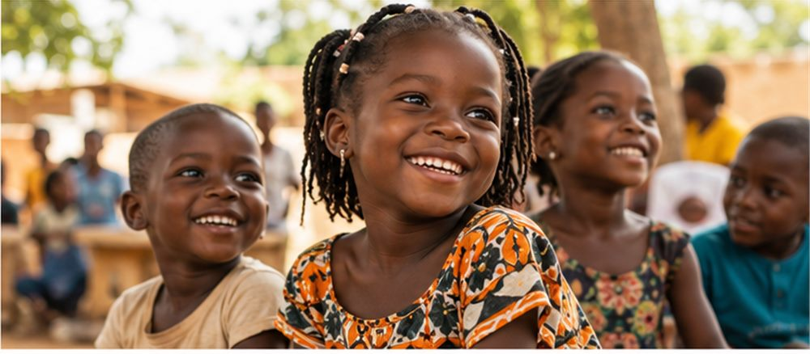

Youth & Leadership
The New Frontier Africa
A TUF initiative with Leadership Simulation presented within Youth & Leadership.
View project detailsThe Unlimited Foundation
TUF brings together three confirmed initiatives in youth leadership, technology learning, and support for children.
About TUF
The Unlimited Foundation is the foundation home for The New Frontier Africa, TUF Tech Academy, and the Smiling Children Project.
Each project keeps its own focus and programme structure while sharing TUF’s identity: Empowering Generations.
Our Projects
Explore each project’s confirmed purpose and programme structure.
Youth & Leadership
A TUF initiative with Leadership Simulation presented within Youth & Leadership.
View project detailsTechnology
Students in Tech, Women in Tech, and Older Adults in Tech.
View project details
Illustrative imageChildren
A confirmed project of The Unlimited Foundation.
View project detailsA TUF Initiative
TNFA is one of The Unlimited Foundation’s three confirmed projects. Its current public programme structure centres on Youth & Leadership.
Partner with TUF
Tell TUF what you would like to discuss. The enquiry draft below will preselect Partnership, and you can change the enquiry type before opening your email application.
Become a PartnerContact
This website does not send or store form entries. It prepares an email draft in your email application. Add the recipient, review the draft, and send it yourself.